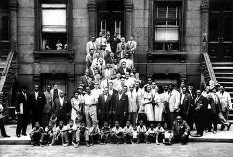

A Great Day in Harlem
Art Kane · 12 August 1958 · Photograph, black and white
In copyright. Look and learn: shown for study, not for download.
Art Kane, a freelance, took this for Esquire on 12 August 1958 with a Hasselblad; the idea was the art director Robert Benton's. The magazine had put out a general invitation through the musicians' union, studios and nightclub owners, and Kane did not know who would turn up. Fifty-seven jazz musicians came to 17 East 126th Street, where the police had blocked the traffic. Count Basie tired of standing and sat on the kerb, and a dozen local children sat down beside him. Esquire ran it as the centrefold of its January 1959 issue.